Learning Pulse · October 25, 2026 · fictional fixtures · providers disabled
Lessons: persistent outline, focused editor, contextual reading
Draft PR #118 · Refs #114, #20, #49, #50. This report supersedes the earlier staged-workspace report. PR remains draft and unmerged.
The horizontal seven-stage rail is removed. The lesson outline remains beside each focused editing surface, with exact-version reading, linked passages and private criteria. Approval and publication remain separate server actions within one review node.
Visual comparison
The approved prototype was rendered from its supplied Main.dc.html and runtime. Its example is Delay × Bandwidth Product (4 objectives, 12 questions). Before/after implementation captures use the same saved Water, heat and changing state lesson (3 concepts, 4 questions, multi-concept support, private criteria, source v1, draft v2 revision 15 and immutable publication v1). These compare equivalent authoring controls and source relationships; they are not a pixel diff with identical wording or question counts. The current shared sidebar remains visible and reduces editor width; that shell is owned by another agent.
1440 × 1000

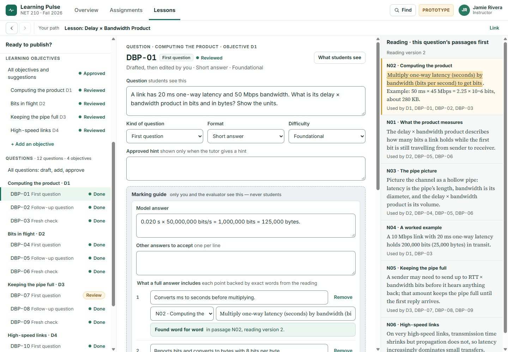

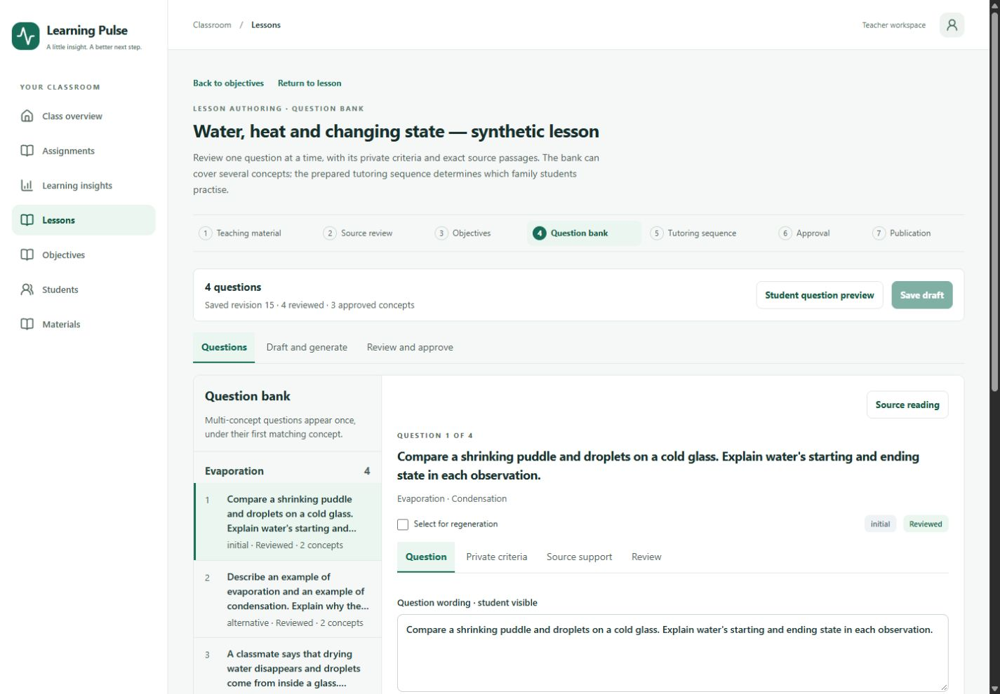

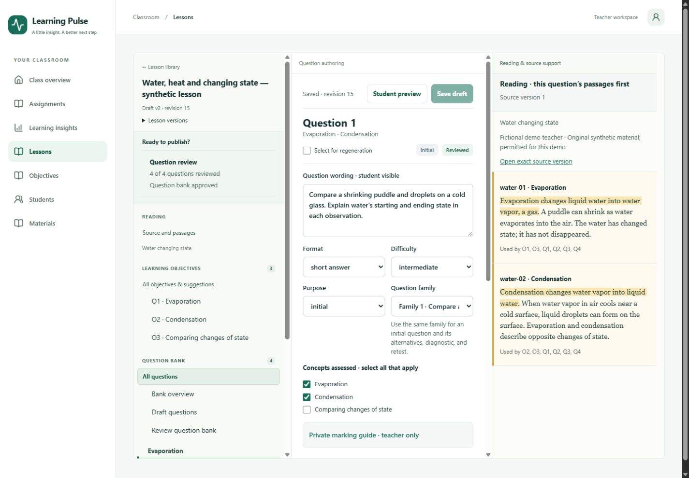
1024 × 768

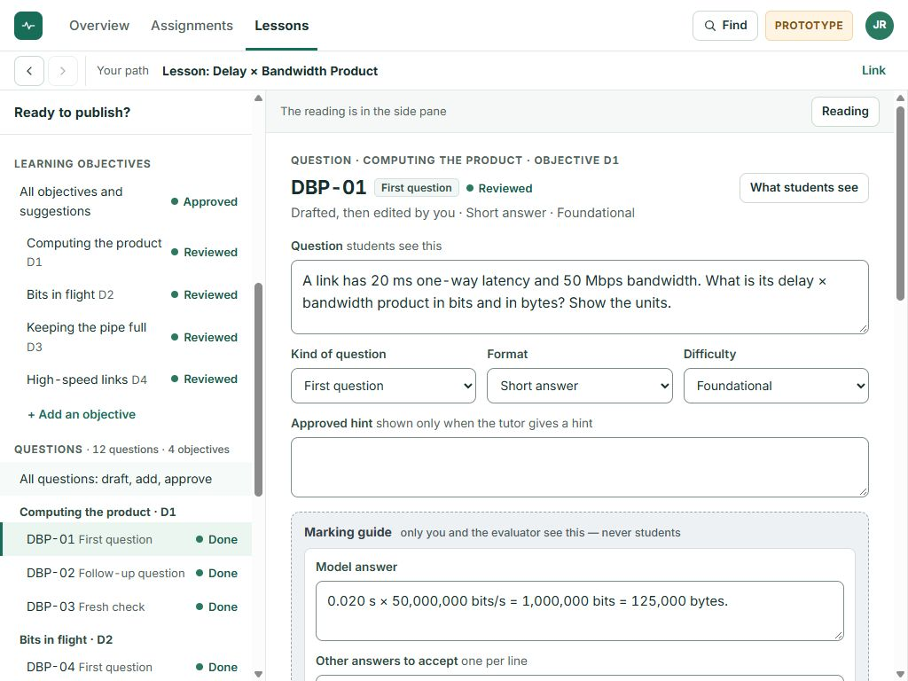

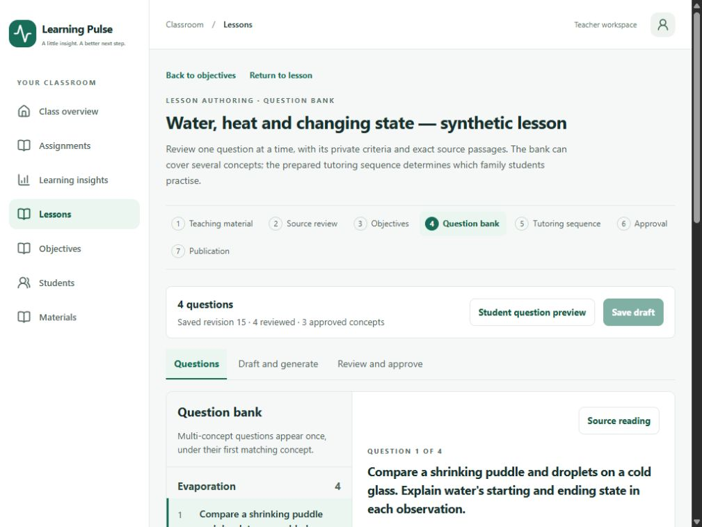

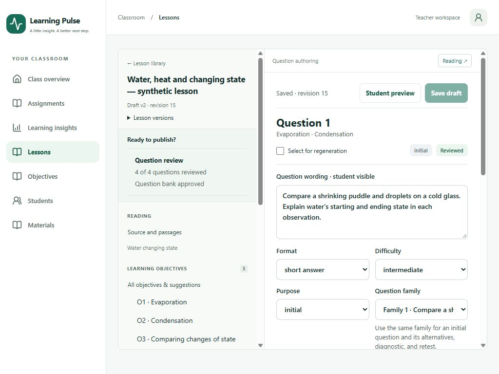
390 × 844

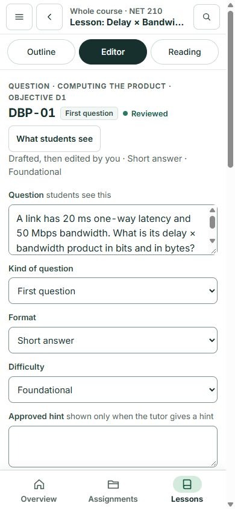

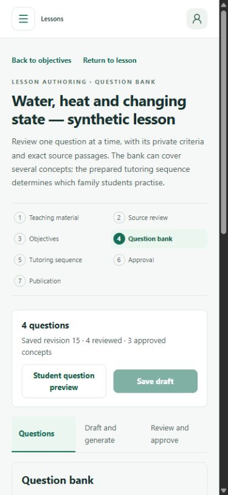

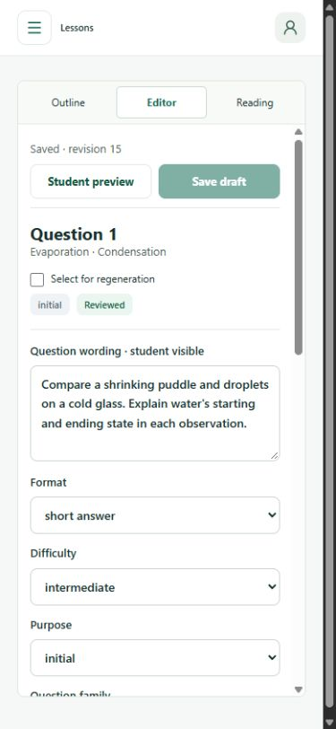
320 × 844

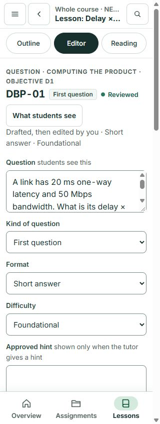

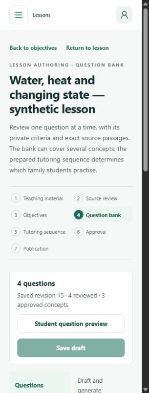

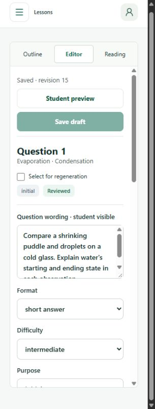
Behavior and measurements
| Viewport | Observed layout | Result |
|---|---|---|
| 1440 × 1000 | 330px outline / 419px editor / 360px reading inside existing shell | Three independent scroll panes; no page overflow. |
| 1024 × 768 | 300px outline / 456px editor; contextual reading drawer | Drawer opens; Escape closes and restores focus to Reading. |
| 390 × 844 | Single editor pane; Outline / Editor / Reading switch | Question selection opens editor; unsaved edits survive pane and question changes. |
| 320 × 844 | Single editor pane; narrow fields wrap | Arrow-key pane switching and private student-preview boundary verified; no page overflow. |
Measured viewport/pane dimensions. Screenshots show the rendered page area; native scrollbars may reduce the captured pixel area.


Feature parity and regression results
| Area | Preserved service / corrected presentation | Evidence |
|---|---|---|
| Material import/versioning | Existing preview/import/version APIs, original and corrected extraction, attribution and stable passage identities. Compact pre-lesson import; saved source has its own outline/editor/original-reading context. | materials:check passed, including PDF and unsupported formats; stable pairing tests; browser selected water-02 without changing source v1. |
| Objectives | Manual/AI suggestions, source review, reordering/merging, approval and recovery retained. Persistent objective outline; supporting exact quotes highlighted. Final version-menu addition uses existing publication review. | objectives:check; 7 objective recovery/highlight tests; exact source handoff selected in inline creation form; browser objective selection. |
| Question bank/private criteria | Stable saved question IDs, generation, multi-concept grouping, source evidence, private answer guidance and review preserved. Q1 labels are presentation only. Overview/draft/review live in the outline; selected question is a focused editor. | questions:check; 6 question state/grounding tests; unsaved private criterion survived reading toggle; its unique marker was absent from student preview. |
| Tutoring preparation | Existing policy, assembly and controller boundaries preserved. Available actions are not presented as a fixed linear run or a guarantee that every bank question is shown. | lessons:check; coverage tests; published sequence outline retained ?version=1 and expanded its read-only disclosure. |
| Approval/publication | One review node; separate explicit approval and publication actions. Saved draft revision validation and immutable published service unchanged. | publishing:check; legacy/version readiness tests; browser published reading remained source v1 / lesson v1 while draft is v2. |
| Recovery/failures/authorization | Existing expected-revision guards, retries, browser recovery copies and server ownership checks retained. | lessons:uncertainty:check and source/objective/question recovery tests passed. Six service/HTTP suites exercised exact ownership/version boundaries with fixture providers. |
Passed: npm test (466); focused authoring tests (24 total: 18 root/material/objective plus 6 question tests run from their literal directory); npm run lint; npm run typecheck; npm run format:check; content verification (293 checks); git diff --check. Six provider-disabled integration suites passed: materials, objectives, questions, lessons, publishing and lesson uncertainty. Their run occurred before the shared storage incident. Production build status is qualified above. Zero paid model calls; no live-model or educational-validity claim.
PR #117 integration contract
Current authoring-side handoff: choose an exact published snapshot at
/teacher/lessons/:lessonId?version=:version, expand
“Prepare a class assignment from version …”, and submit the existing
CreateClassAssignment control. It posts the selected immutable version
through the existing assignment service and creates an
inactive assignment. Class assignments owns subsequent
review and activation.
PR #117 provides
/teacher/assignments/new?lesson=<lesson-id>&version=<published-version>&class=<optional-owned-class-id>. Both lesson and version are required for the pinned handoff; optional
class must be teacher-owned. That route is absent from this branch's
main base. Keep the existing working inline handoff until #117 is
integrated; then the authoring owner can link to that route while the
assignment owner retains review/activation. No assignment files changed
here.
Remaining deviations and integration gates
- The shared shell/sidebar and its outer spacing remain from main; consume the shell owner's corrected #116 contract after integration and repeat the four-width comparison.
- The final objectives version-menu addition is statically verified but awaits a production rebuild/browser capture when storage is safe. No declaration of final integrated visual acceptance.
- The real prepared tutor currently uses one question family. Multi-family runtime sequencing is not implemented by this UI.
- Library material usage aggregation is not fabricated; existing approved material listing is retained. Prototype simulated live suggestions and class activation are not implemented as fake controls.
- The reference uses a denser 12-question example while the equivalent before/after fixture has four multi-concept questions. Repeat density acceptance with a genuine larger reviewed lesson during integration.
- All parent issues stay open; independent integration review and deployment/live-model acceptance remain outside this UI correction.